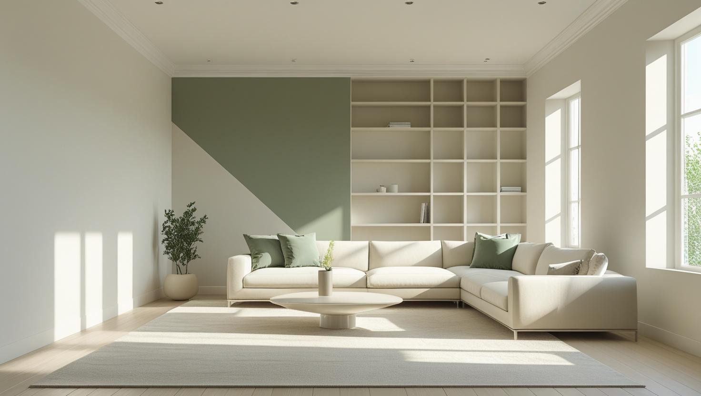
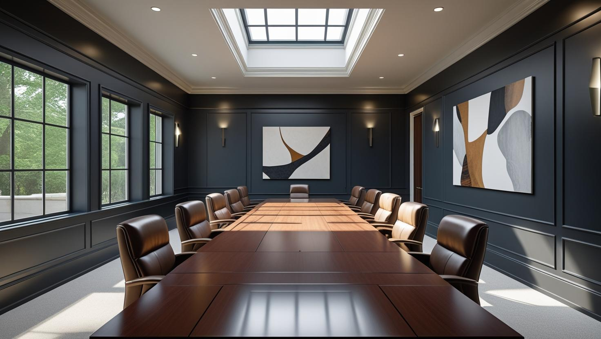
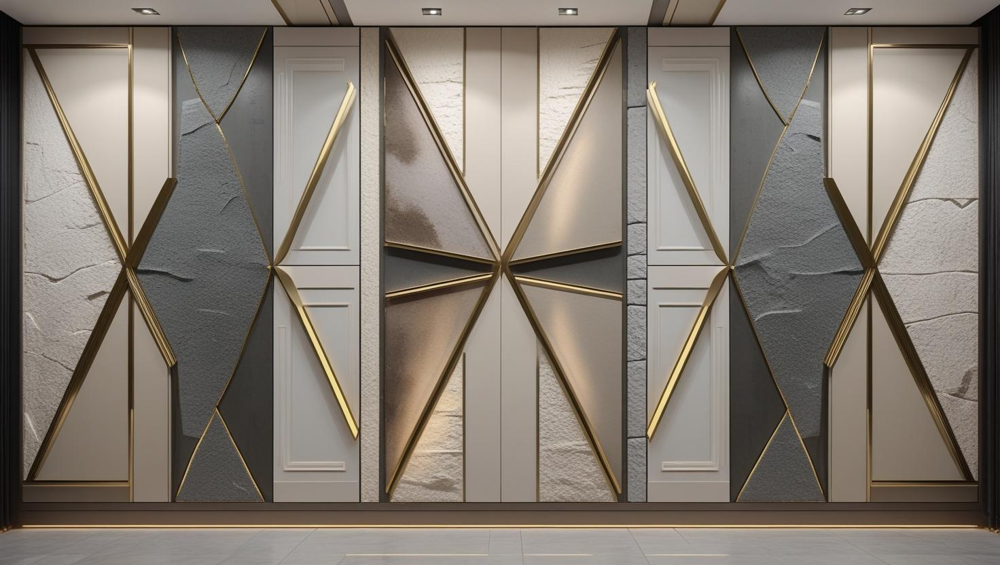

Üsküdar'ın Tercihi Profesyonel Boyacı Ustası
Daire, apartman ve iş yerleriniz için Üsküdar'ın tarihi ve sakin dokusuna saygılı, titiz ve kaliteli boya badana hizmetleri sunuyoruz.
Üsküdar'da Boya Badana: Eski Yapı Dokusu ve Yokuşlu Sokaklar
Üsküdar boyacı talebi ilçenin katmanlı yapı dokusundan şekilleniyor. Sahil ve merkez çevresinde uzun yıllardır yerinde duran apartmanlar, yamaç mahallelerde az katlı konut, Ünalan ve Bulgurlu hattında ise daha yeni site stoğu bulunuyor.
Eski dokudaki dairelerde tavanlar yüksek, sıva kalın ve üzerinde yıllar içinde birikmiş birkaç kat boya var. Bu yüzeylerde iş boyadan önce başlıyor: kabaran katmanın raspası, çatlak ve tavan kenarı onarımı. Yüksek tavan ayrıca boyanacak yüzey alanını metrekare beklentisinin üzerine çıkarıyor.
Yokuşlu ve dar sokaklarda araç yanaşma ile asansörsüz üst katlara malzeme taşıma, işin gün sayısına yansıyan gerçek kalemler. Üsküdar boya ustası keşfinde adresi yerinde görüp bunu baştan hesaba katıyoruz.
Üsküdar'da Sunduğumuz Boya Hizmetleri

Daire & Apartman Boyama
Modern veya tarihi, Üsküdar'daki evinizin karakterine uygun renklerle, temiz ve profesyonel hizmet.
- Yüksek tavanlı odalarda eşya ve zemin koruması
- Tarihi dokuya uygun boya seçimi
- Kaliteli, kokusuz boya seçenekleri
- Merdiven ve bina girişini koruyarak temiz teslim

Ofis Boyama Hizmeti
Ofisinizin duvarlarını profesyonel boya uygulamalarıyla yenileyerek çalışanlarınız ve misafirleriniz için ferah, motive edici bir ortam sağlıyoruz.
- Kurumsal renk uyumu ve marka odaklı tasarım
- Mesai saatleri dışında esnek çalışma
- Koku yapmayan, hızlı kuruyan boyalar
- Mobilya koruma ve temiz teslimat garantisi

İş Yeri & Dekoratif Boya
Ofis, kafe veya mağazanıza özel kimlik kazandırmak için modern dekoratif boya çözümleri sunuyoruz.
- İtalyan dekoratif boya uygulamaları
- Beton efekti ve modern dokular
- Marka kimliğine uygun renk tasarımı
- Esnek çalışma saatleri ile hızlı teslimat
Neden Üsküdar'da Bizimle Çalışmalısınız?
Üsküdar Uzmanlığı
Üsküdar'ın semtlerini, tarihi apartmanlarını ve ihtiyaçlarını iyi bilen, tecrübeli yerel ekip
Titiz İşçilik
Eski dairelerde kartonpiyer, pervaz ve kapı kasası kenarlarını bantlayarak düzgün bir çizgiyle boyarız
Premium Malzemeler
Yapınıza değer katan, en iyi ve en dayanıklı markaları (Jotun, Filli Boya, Marshall vb.) kullanırız
Güven & Saygı
Evinizin mahremiyetine ve komşularınıza karşı en üst düzeyde saygılı davranırız
Temiz Teslimat
İş bitiminde evinizi veya iş yerinizi boya öncesi gibi tertemiz bırakırız
Memnuniyet odaklı hizmet
Üsküdar'daki mutlu müşterilerimiz ve referanslarımız kalitemizin kanıtıdır
Üsküdar Boyacı Ustası: Mekanlarınız İçin Profesyonel Çözümler
Boğaziçi'nin incisi Üsküdar'da boyacı ustası hizmeti, sadece bir renk değişiminden ibaret değil, yaşam alanlarınıza gösterilen özeni ve tarihi dokuya saygıyı ifade eder. Ekip olarak, bu değerli ilçenin tarihi apartmanlarından, Kuzguncuk ve Beylerbeyi'nin seçkin evlerine, Çengelköy ve Salacak'ın eşsiz manzaralı dairelerine kadar her yapıya hak ettiği değeri veriyoruz. Üsküdar daire boyama veya Üsküdar apartman boyama konusundaki tecrübemiz ve hassas işçiliğimizle, mekanlarınızı sadece boyamıyor, onların estetiğini ve değerini artırıyoruz.
Keşif randevusu alırken dairenin kaçıncı katta olduğunu, binada asansör bulunup bulunmadığını ve hangi odalarda tavan ya da sıva onarımı gördüğünüzü belirtirseniz Üsküdar'daki adresiniz için iş planını daha isabetli kurarız. Oda sayısına göre değişen maliyet aralıkları 2026 boya badana fiyatları rehberinde yer alıyor.
Üsküdar boya ustası ekibimiz, ev boyama projelerinde Kuzguncuk ve Beylerbeyi'nin eski dokulu binalarında nem kontrolü ve yüzey hazırlığına özel önem verir; Altunizade çevresindeki ofis boyama işlerini ise mesai dışı programlarla teslim eder. İlçe dışındaki projeleriniz için İstanbul genelinde boya badana hizmeti sunan ekibimize ulaşabilirsiniz.
Üsküdar ve Çevresindeki Hizmet Bölgelerimiz
Üsküdar boyacı ustası olarak, başta merkez olmak üzere tüm mahallelerine ve komşu ilçelere hizmet veriyoruz:
Üsküdar ve Yakın Çevresi
- Üsküdar Merkez (Mimar Sinan)
- Salacak
- Kuzguncuk
- Beylerbeyi
- Çengelköy
- Kandilli
- Altunizade
- Acıbadem
- Kısıklı
- Bulgurlu
- İcadiye
- Ferah Mahallesi
Faydalı Bağlantılar
Üsküdar boya badana planında fiyat hesabı, boya markası ve yakın ilçe seçeneklerini birlikte değerlendirmek için aşağıdaki rehberler kullanılabilir.
Fiyat nasıl belirleniyor? Üsküdar'daki işler için bu sayfada rakam paylaşmıyoruz; aynı metrekaredeki iki dairenin işçiliği, binanın yaşına ve duvarların geçmişte kaç kez boyandığına göre belirgin biçimde ayrışabiliyor. Yazılı teklifi ölçülen duvar ve tavan alanı, onarım miktarı, astar ve kat sayısı, malzeme sınıfı ve evin eşyalı olup olmadığı yerinde görüldükten sonra hazırlıyoruz. Keşif ücretsizdir ve randevuyla yapılır.
Üsküdar'da işi büyüten kalemler yüksek tavan nedeniyle artan yüzey alanı, eski katmanların raspası ve yokuşlu dar sokaklarda malzeme taşıma. Yeni site dairelerinde bunların hiçbiri devreye girmediğinde iş belirgin biçimde kısalıyor.
Daire boyasında oda sayısına göre aralıkları 2026 ev boyama fiyatları yazısında topladık. Apartmanın merdiven boşluğu ve ortak alanları için yönetimle birlikte teklif alacaksanız apartman merdiveni boyama fiyatları yazısı hazırlığı kolaylaştırır; işin kapsamını ve çalıştığımız diğer bölgeleri İstanbul boyacı hizmet bölgeleri sayfasında görebilirsiniz.
Sıkça Sorulan Sorular
Üsküdar'da eski apartman dairesi, ortak alan ve ahşap doğrama boyasıyla ilgili sorular
Ortak alan boyası tek bir daire sahibinin değil, apartmanın ortak kararıdır; bu karar çoğunlukla kat malikleri toplantısında, yönetim planında yazan usule göre alınıyor. Keşfi yönetici ya da görevlendirilen kat maliki ile yapıp yazılı teklifi yönetime iletiyoruz. Cephe için kurulacak iskele kaldırımı kapatacaksa belediye izni gerekip gerekmediğini de işe başlamadan öğrenmek gerekir.
Bu bölgelerde rutubet kontrolü, eşyalı daire boyama ve premium iç cephe yenileme öne çıkar. Bina yaşı, eşya yoğunluğu ve teslim tarihi iş programını belirlediği için çalışma planı adrese göre hazırlanır.
Evet, duvar boyasıyla aynı iş planına eklenebiliyor. Eski kapı ve kasalarda çoğu zaman yağlı boya katmanı bulunduğu için yüzey zımparalanıp uygun astar sürülmeden su bazlı boyaya geçilmiyor; çatlamış ya da kırılmış kartonpiyer ise önce alçıyla onarılıyor. Teklifte kapı ve kartonpiyer işçiliğini duvar boyasından ayrı görebilirsiniz.
Evet. Malzemenin taşındığı merdiven ve bina girişi iş boyunca örtüyle korunuyor, bitişte örtüler toplanıp süpürülüyor; duvara ya da korkuluğa boya değdiyse siliniyor. Daire içinde de maskeleme bantları ve naylonlar kaldırılıp zemin temizlenerek teslim yapılıyor.
Yüksek tavanlı eski dairede metrekare hesabı nasıl değişiyor?
Zemin metrekaresi aynı olsa bile boyanacak duvar yüzeyi tavan yüksekliğiyle birlikte artıyor. Ayrıca yüksek tavanda çalışmak platform ve ek süre gerektiriyor. Bu yüzden teklifi zemin metrekaresi üzerinden değil, ölçülen yüzey alanı üzerinden veriyoruz.
Eski binada kalın sıva üzerine boya tutar mı?
Sıva sağlamsa tutar; sorun genellikle sıvada değil, üzerindeki eski boya katmanlarında oluyor. Kabaran ya da tozuyan katman raspalanmadan uygulanan boya kısa sürede birlikte kalkıyor. Keşifte yüzeyi kontrol edip hangi bölümde raspa gerektiğini ölçüyoruz.
Dar sokakta araç yanaşamıyorsa iş aksar mı?
Aksamaz ama uzar. Malzeme taşıma süresi artıyor ve bu gün sayısına yansıyor. Keşifte adresi görüp planı buna göre kuruyoruz; sonradan ek kalem çıkarmıyoruz.
Google Haritalar'daki Müşteri Yorumlarımız
Yorumlar, İstanbul Boyacılık'ın Google Haritalar işletme profilinden olduğu gibi alınmıştır. Üsküdar dahil İstanbul genelindeki işlerimize ait yorumların tamamını Google Haritalar profilimizde okuyabilirsiniz.
"Enes beye çok tşk ettim yönlendirigi ustalar gayet güzel işçilik yaptılar poşet olsun süpürgelik üstüne band olsun hepsini yaptılar ve işin sonu mükemmel hiç kirletme olmadı gönül rahatlığıyla tavsiye ediyorum tekrardan çok teşekkürler ediyorum gayet memnun kaldım"
Mehmet Çevik
Google Haritalar yorumu
"Baran ustadan çok memnun kaldık, ellerine emeğine sağlık hakkını helal etsin. Temizliğe özene çok dikkat eden ince işçilik çalışan birisi. Mutlaka çevreme de önereceğim kendisini. 🙏"
Yaren Sert
Google Haritalar yorumu · İç cephe boyama
"Firma ile Mayıs 2026 başında çalışma imkanım oldu gelen Baran Usta işinin gayet ehli hızlı ve tertemiz işini bitirdi fiyatları gayet uygun çalışma performansı gayet yüksek daireyi pırıl tertemiz yapıp çıktılar Baran Usta ve yanındaki arkadaşlara teşekkür ederim"
Tamer Özkenel
Google Haritalar yorumu
İletişim Kurun ve Ücretsiz Keşif Alın
İşletme merkezi: Orta, Demirkapı Cd. No:1, 34030 Bayrampaşa/İstanbul
İşletme merkezini Google Haritalar’da görüntüleyin
İletişim Bilgilerimiz
Çalışma Saatleri: 7/24 (Pzt-Paz 00:00-23:59)
Telefon: 0507 832 29 12
E-posta: boyaustamistanbul@gmail.com
10+ Uzman Ustamızla Üsküdar ve tüm İstanbul'a hizmet veriyoruz.